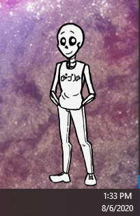

My Ghost
Description of Ghost.
Description of Ghost.
An Ukagaka, or Ghost, is a character that sits on your desktop! They can do stuff for you such as emptying your recycling bin, checking for new emails, checking the weather and more! Most of the time they'll just keep you company and say stuff.
Ghosts are very diverse though, and some have a strong focus on story and discovering information, while others are full of interesting functions or games.
To use a ghost, you'll need a program to run it in. If you're on Windows, you can use SSP. If you're not on a Windows PC there are some other options available, but you'll have to play around and see what works for ya.
Mac: Ukagaka on Macs, NiseRingo, PlayonMac+SSP, WineBottler
Linux: NINIX-AYA
For those using SSP, go ahead and download the complete install package from the website. To the left and the top one! When you run it, a catgirl called Emily should appear and say a greeting in Japanese. Drag and drop the .nar file you downloaded onto her, and she should install them for you. Once she's done, right click her, hover over 'Change Ghost', and select your brand new ghost!
If you get an error message or window in Japanese when you start SSP, it probably can't find any ghosts to run. You can try dropping the .nar file onto that window. If that doesn't work, click the first button and point it towards your ghost directory(It should be \SSP\ghost).
If the right click menu is in Japanese, the language option is the 4th one up from the bottom. Select English, and restart SSP (you can close it with the lowest option), and you should be good to go!
If the catgirl will not install any ghosts for you, you can unzip the .nar file and drag the contents into the \SSP\ghost folder. Your unzipped folder should have subfolders called 'ghost' and 'shell' on the top level. Restart SSP and look in the right click menu again, and they should be in your list of ghosts.
Instructions on how to use each ghost are in their readme, which should automatically pop up when you install them! If it doesn't appear, you can see it by opening them, right clicking, and going to Information>Read me.